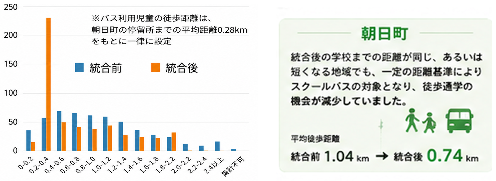
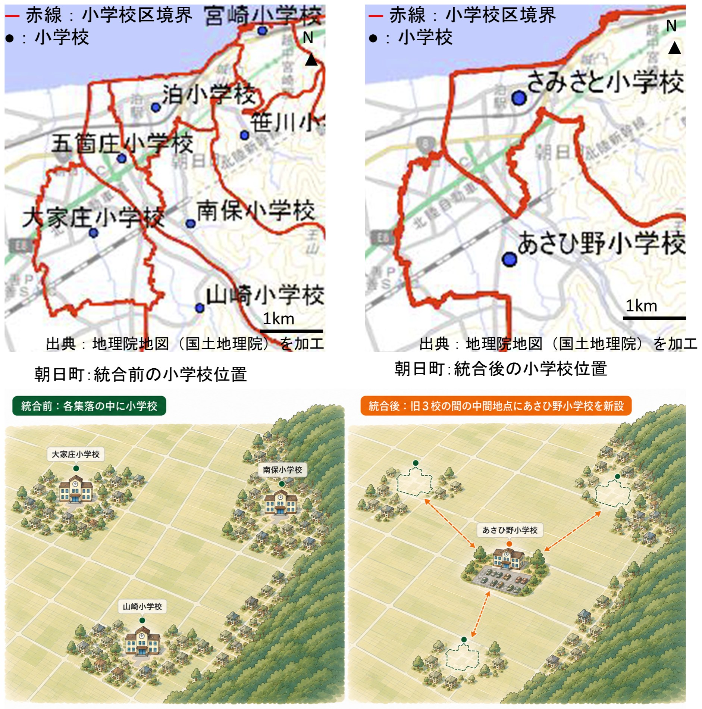

子どもの通学実態と事例
小学校統合で徒歩通学の機会をなくさないために
小学校を統合すると、学校までの距離が長くなり、スクールバスが導入されることがあります。スクールバスは子どもの通学を支える重要な手段ですが、距離基準によって利用対象を決めると、スクールバス利用者は、自宅側の乗降地点から学校までバスで移動することが基本となり、歩ける地域や季節であっても徒歩の機会が失われることがあります。では、統廃合後にも子どもの「歩ける機会」を残すには、どうすればよいのでしょうか。ここでは富山県朝日町における小学校統合前後の通学環境の変化事例を通じて、その方法を考えてみます。
地方で進む小学校の統廃合
少子化に伴い、小学校統廃合とスクールバス導入が全国で進んでいます。徒歩通学には、身体活動だけでなく、交通安全を学ぶ機会や、友だち・地域の人と出会う機会など、多面的な価値があります。一方、統廃合後に徒歩機会がどの程度変化するかは、学校の位置やスクールバスの運用によって異なります。
スクールバスの利用対象は、自宅から学校までの距離を基準として決められることが一般的です。そのため、基準距離を超えた児童は、自宅側から学校まで全区間をバスで移動することになり、途中に安全に歩ける区間があっても、徒歩機会を持ちにくくなります。
小学校統廃合前後の徒歩通学の変化を調べる
富山県朝日町を対象に、100m四方のメッシュ人口(2010年）とGISの道路ネットワークを用いて各地域から小学校までの徒歩経路を算出し、統廃合前後の徒歩通学距離を比較しました。
また、町内の小学4～6年生の保護者を対象に通学実態を調査し、スクールバスを学校の少し手前で降りて残りを歩く「リモートドロップオフ」を紹介して、メリット・デメリットや受け入れ可能な徒歩時間について意見を尋ねました。
徒歩通学の機会は残せる可能性がある
朝日町では、統廃合の前後でスクールバスの対象となる距離基準が3kmから2kmへと変更されたこともあり、統合後の学校までの距離が統合前と同じ、あるいは短くなる地域であっても、スクールバスの対象となりました。統合前には2km以上歩いて通学する児童もいましたが、統合後は徒歩距離の分布は大きく短距離側へ移動しました。一方、スクールバスを利用する児童の保護者には、リモートドロップオフを採用することに対する一定の受容性が確認されました。「徒歩」か「全区間バス」かを固定せず、通学経路の一部に、徒歩区間を組み込むことで、統合後にも児童の徒歩機会を残せる可能性があります。

統廃合後の徒歩機会は、学校までの距離だけでなく、スクールバスの利用基準によって変化する
「どこを歩くか」は学校の位置と地域環境で変わる
ただし、どこに徒歩区間を設けるかは、地域の環境によって異なります。まちなかの学校周辺には、公園や施設、放課後の行き先、人との接点があり、交通安全を学ぶ機会もあります。一方、田園集落地域では、学校周辺に農地が広がり、木陰や照明、人通りが少ない場所もあります。そのため、学校側で歩くのか、自宅側の集落内を歩くのかは検討する必要があります。さらに夏の暑さ、冬の積雪、秋の熊の出没など、歩行条件は季節によっても変わります。歩ける時期や安全な区間を選びながら、徒歩機会を残すことが重要です。（図２参照）

朝日町の田園集落地域では、統合前は各集落の中に小学校があったが、統合後は旧3校の間に広がる農地に小学校が新設されたため、学校側と自宅側では、歩行環境や地域との接点が大きく異なる
実践への示唆：スクールバス導入時に「歩ける機会」を計画する
スクールバスの導入時には、「誰をバスに乗せるか」だけでなく、「どこに徒歩機会を残せるか」も検討してみましょう。乗降地点を一つに固定せず、学校側・自宅側の安全な場所に徒歩区間を設定したり、季節や天候に応じて乗降地点を変えたりする方法が考えられます。歩ける時期や安全な区間を選び、徒歩とバスを柔軟に組み合わせることで、統廃合後も子どもの「歩ける機会」を残すことができます。